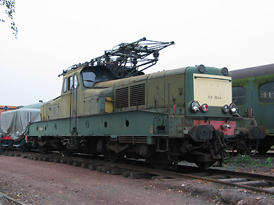

BB 13000
Les Fer à repasser à moteurs directs
Quelques données techniques
Constructeur : SFAC Jeumont Schneider Oerlikon SLM Brown-Boveri
Tension d'alimentation : monophasé 25 kV, 50 Hz
Chaîne de traction : graduateur haute tension
Motorisation : 2 moteurs directs entièrement suspendus par bogie
Puissance totale : 2005 kW (BB 13001 à 13015)
2134 kW (BB 13016 à 13053)
Longueur : 15,2 m
Masse : 85t
Pantographes : 2 MT
Pour plus d'info :
La fiche BB 13000 sur Wikipedia
L'inventaire des BB 13000 sur Trains du Sud-Ouest

La BB 13052 préservée à Mohon (18/09/2004)
La BB 13052 exposée aux JPO de Lens (11/06/2005)

La BB 13044 préservée par le CMCF (Oignies, 27/09/2003)
La BB 13052 est repeinte en Bleu "Armand" (Longueau, 05/10/2013)